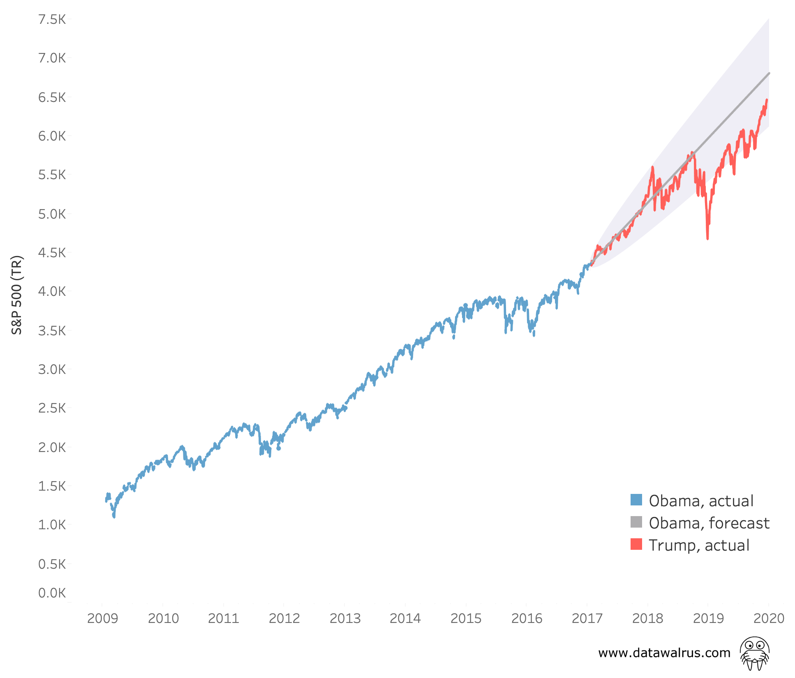

It's the economy...
For this post I'm going to dive into a risky area....US politics! Well, more specifically, the performance of the economy and how it relates to politics.
Unless you've been living under a rock, you may have noticed the US political climate has been quite heated (maybe that's what's melting the polar caps?). A big talking point in politics is, and always has been, the economy. Our current President has repeatedly pointed to the economy as a measure of his success. His supporters also talk about the growth of their 401k under his administration. It's true, the US economy is doing well, specifically, the market is at all time highs. But all this got me thinking - how much credit can a President take for the economy, especially in their first term? I turned to the data to try to find out.
For this analysis I used S&P 500 data from 2009 to now as an indicator of economic prosperity. Now, the market is not the economy. To say they are the same thing is like calling your tire a car. It's only one part of a big machine. But still, it's a good indicator. My objective was simple, I wanted to try to model out the S&P 500 using the eight years Obama was in office and compare that to the actual performance under Trump. My hypothesis was that the market has performed well under Trump, but it is more or less on the same trajectory it was on when he took office.

You can see above the S&P 500 total return under Obama (blue) and under Trump (red). There is also a forecast in gray that uses the eight years of Obama data. The shaded area shows where we'd expect to see the S&P 500 based on this data, with 90% confidence.
Now, the market is not the easiest thing to model. If it were, then everyone would be rich. So, this forecast does have to be taken with a grain of salt. I am not saying this would definitely be the outcome, more so, this would be the outcome if the market followed the same growth under Obama. Using this data I could see that the market was indeed in line with this forecast. All this does make you wonder how much credit can Trump take for the market success and how much was inherited growth? It's hard to say.
I just want to emphasize again. Economical models are hard to build, and I am by no means an economist. I am just using old data to build a trend, that's all. No one knows what would have happened if Obama remained President during this time period. He might have bought Greenland.
-DW